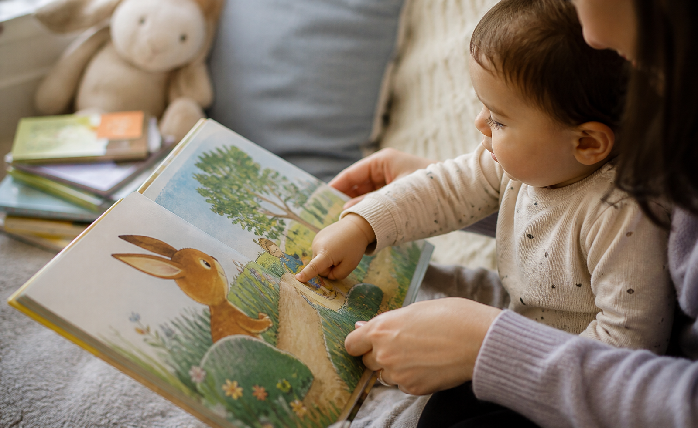

A good bedtime story app should help your child slow down, not become more excited. It should make reading easier for the parent while still keeping the parent’s voice, warmth, and presence at the center of the bedtime routine.
In this guide, we’ll look at what parents should check before choosing a bedtime story app for toddlers, why calm design matters, and how a parent-led app like Baboo Stories can support a softer bedtime routine.
What parents really need from a bedtime story app
Most parents searching for a toddler bedtime story app are not trying to add another complicated activity to the evening. They are tired. Their toddler may be resisting sleep, asking for one more drink, or suddenly finding new energy just when the room is meant to get quiet.
The real need is usually simple: a story that is easy to find, easy to read, and calm enough to repeat night after night. Some printed books are too long for a tired two-year-old. Some apps are full of bright menus, rewards, and moving parts. Parents often want a middle ground that gives them quick access to gentle stories without turning bedtime into more entertainment.
A good bedtime story app should make the parent’s evening easier, not make the child more excited. It should help create a predictable rhythm: choose one story, read it together, have a cuddle, and close the day.
Best bedtime story app for toddlers: what parents should look for
Toddlers need stories that match their age, language, emotions, and attention span. The best bedtime story app for toddlers should feel simple, calm, and easy for a parent to use at the end of a long day.
Look for short stories with simple words, warm themes, gentle endings, and very few distractions. A story app for 2 year old children should not feel like a maze of menus. A story app for 3 year old children should still be easy enough for a parent to open quickly when bedtime is already running late.
Good toddler stories often focus on familiar feelings: being kind, saying goodnight, sharing with a friend, visiting a gentle animal, noticing the moon, or taking a small adventure that ends safely. Stories suitable for ages around 1 to 5 should give children enough imagination to enjoy the moment without adding fear, noise, or too many choices.
A strong toddler story app should also respect the parent’s role. The app can organize the stories, suggest gentle themes, and make choices easier, but the bedtime moment should still belong to the parent and child.
Why calm stories matter for young children
Many kids bedtime story app competitors highlight big libraries, sound effects, animations, rewards, read-aloud modes, highlighted words, and recommendations. Those features can be useful in the right context, especially for daytime learning or independent play. But bedtime has a different purpose.
At bedtime, the goal is not excitement. The goal is to help the child slow down. For toddlers, a calm app experience may be more useful than an app filled with buttons, sounds, animations, and rewards. A feature-rich app can be impressive, but the parent still has to ask: will this help my child settle, or will it invite more tapping, watching, negotiating, and “one more” requests?
Calm design means the app stays in the background. The story, the parent’s voice, and the bedtime mood stay in the foreground. That difference matters when a child is already tired and sensitive to stimulation.
Calm stories give young children a softer emotional landing. A familiar character, a kind choice, a gentle ending, and a clear goodnight rhythm can help storytime feel safe instead of dramatic.
Why parent-led reading is better than autoplay stories
Auto-play stories, audio narration, and “read for me” features can be convenient. They may help during travel, quiet time, or moments when a parent truly needs help. But parent-led reading creates a different kind of bedtime moment.
A parent’s voice is flexible. You can slow down when your toddler looks sleepy, pause when they point at something, soften a line that feels too exciting, or add a familiar goodnight phrase at the end. Your facial expressions, cuddles, and tiny conversations make the story feel personal.
Baboo Stories is designed to keep the parent at the center of the bedtime story, not replace the parent. It helps the parent create a calmer bedtime story moment by making gentle stories easier to open, read aloud, and repeat as part of a nightly rhythm.
Autoplay can keep a story moving, but it cannot notice your child in the same way. Parent-led reading lets you respond to wiggles, questions, sleepy eyes, and the small emotional cues that make a story feel personal.

Why short stories work better for ages 2–5
For bedtime, the best story is not always the most dramatic story. Toddlers have short attention spans, and long stories can become difficult when a child is already tired. A toddler may respond better to a simple story about kindness, animals, family, sharing, nature, or a small gentle adventure.
The story can still have meaning, but it does not need to create fear or excitement before sleep. Stories with danger, punishment, loud conflict, or scary characters may be better saved for another time, depending on your child. Gentle bedtime stories for toddlers usually work best when they move toward safety, comfort, and a clear ending.
Short stories also help parents. When the story is around a few minutes long, it is easier to say yes consistently. The routine becomes realistic instead of another long task added to the end of the day.
For ages 2 to 5, short stories also leave room for the relationship around the story: one question, one cuddle, one repeated phrase, or one tiny retelling in your child’s own words.
Screen-light storytelling: a better middle ground
For many families, the goal is not to remove technology completely. The goal is to use it quietly and intentionally. That is where screen-light bedtime stories can be helpful.
Screen-light storytelling means the screen is used only as a tool for the parent. The parent opens the story, reads it aloud, and keeps the child focused on the voice, the moment, and the imagination, not on tapping, swiping, or watching animations.
This approach is different from handing over a device for solo screen time. Parents can lower the brightness, hold the phone or tablet themselves, and keep the bedtime interaction centered on the relationship. The app supports the ritual, but it does not take over the ritual. If your toddler is asking for videos at night, this calmer screen-light bedtime routine can help you replace autoplay with one parent-led story.

Important features to look for in a toddler bedtime story app
Use this checklist when comparing apps. The best story app for toddlers is the one that fits your actual bedtime, not the one with the longest feature list.
| Feature | Why it matters |
|---|---|
| Short stories | Easier for tired toddlers and tired parents. |
| Gentle themes | Helps bedtime stay calm. |
| Simple design | Creates less distraction before sleep. |
| Parent-led format | Encourages bonding and keeps your voice central. |
| Age-appropriate language | Makes stories easier for toddlers to follow. |
| Minimal animations | Reduces bedtime stimulation. |
| Offline or easy access | Useful when parents need a quick story. |
| Story variety | Keeps the routine fresh without making it chaotic. |
What to avoid in a bedtime story app for toddlers
Some features are not always bad. They may work well during daytime learning, travel, or play. But for bedtime, parents may want something softer, simpler, and slower.
- Too many animations or moving elements before sleep.
- Reward systems that make the child want to keep playing.
- Loud sounds, sudden music, or dramatic effects.
- Stories built around fear, danger, punishment, or scary themes.
- Complicated navigation when the parent needs a quick choice.
- Long stories when the child is already tired.
- Apps designed more for solo screen time than parent-child reading.
The key question is not whether a feature is impressive. The key question is whether it helps your toddler move toward rest.
How Baboo Stories supports parent-child connection
Baboo Stories was created for parents who want gentle stories they can read aloud to young children. Instead of making bedtime louder or more visually busy, Baboo focuses on simple, kind, calming stories that support imagination and connection.
Baboo Stories is not trying to replace the parent. It helps the parent create a calmer bedtime story moment. Parents stay in charge of the pace, the voice, the pauses, and the ending. The app simply makes it easier to find a gentle story when everyone is tired.
For toddlers and preschoolers, that parent-led design may help make bedtime feel more repeatable. Choose one story, read it softly, ask one small question if it feels right, and close with the same goodnight phrase. No app can promise instant sleep, but a calmer routine may help the whole evening feel less rushed.
That connection-first design is why Baboo works as more than a bedtime utility. It gives parents a simple starting point for a shared story, then leaves space for voice, imagination, questions, and the family’s own small rituals.
Final checklist before choosing a toddler story app
Before choosing a bedtime story app for your toddler, ask:
- Does it feel calm enough for bedtime?
- Are the stories short and gentle?
- Can I read the stories aloud myself?
- Is the design simple?
- Does it avoid overstimulating my child?
- Does it support parent-child bonding?
- Can it become part of a nightly routine?
If you are looking for a calm, gentle, parent-led bedtime story app, Baboo Stories was created for exactly that kind of evening.
FAQ
What is the best bedtime story app for toddlers?
The best bedtime story app for toddlers depends on what your family needs. Some parents want audio, animations, or a large story library. Others prefer a calmer, parent-led app with gentle stories that can be read aloud before sleep. Baboo Stories was designed for families who want that calmer, parent-led approach.
Are bedtime story apps good for toddlers?
They can be helpful when used intentionally by a parent. A story app works best when it supports reading, bonding, and routine rather than replacing the parent with passive screen time.
Should toddlers use story apps before bed?
For bedtime, a screen-light approach is usually better than handing the device to the child. The parent can choose the story, lower the brightness, and read aloud while keeping the focus on connection.
How long should a toddler bedtime story be?
For many toddlers, a short story of around 3 to 7 minutes is enough. The goal is not to finish a long book. The goal is to create a calm ending to the day.
What kind of bedtime stories are best for toddlers?
Gentle stories about animals, family, nature, kindness, sharing, and small everyday adventures usually work well before sleep.
Is Baboo Stories only for bedtime?
No. Baboo Stories works well at bedtime because the stories are calm and parent-led, but families can also use it for quiet afternoons, travel, or any moment when a short read-aloud story would help children imagine and connect.
More bedtime reading from Baboo
If you are shaping a full bedtime routine, you may also like our guides on what to do when your toddler won’t sleep, why gentle bedtime stories matter, bedtime story prompts for parents, and the Baboo Stories app.
Make storytime calmer tonight
If you want a gentle, parent-led way to read at bedtime, Baboo Stories can help you choose one soft story and keep the focus on connection.
Baboo Stories is a calmer bedtime story app for parents who want to read, bond, and help toddlers wind down with gentle read-aloud stories.